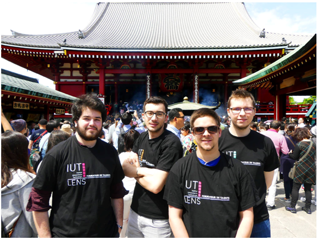

Temoignage de Geoffrey Baudelet
Quand et combien de temps es-tu parti au Japon ?
Je suis parti 3 mois, de début Avril à début Juillet 2017.
Qu’as-tu fait là-bas ? (Ton stage, sortie, activité, etc…)
L’université dans laquelle je faisais mon stage était proche de Sendai, une grande ville à environ 350km de Tôkyô. Mon stage avait pour but de développer une application capable de réaliser des preuves formelles de théorèmes mathématiques. Pour développer cette application, je devais utiliser un solveur SMT. Étant donné que les problèmes SMT sont semblables aux problèmes SAT vus en deuxième année à l’IUT, je n’étais pas perdu et j’ai trouvé le sujet intéressant.
Étant assez proche d’une très grande ville, il y avait beaucoup de choses à faire. J’ai pu m’essayer à des activités qui sont très communes pour les japonais, mais assez peu pour nous. J’ai donc pu essayer les karaokés, les salles d’arcade, les visites de temples, et un tas d’autres choses.
Les sorties se faisaient principalement entre étudiants d’échanges (en l’occurrence français et finlandais) ainsi que des élèves japonais. Ça permet de découvrir d’autres cultures. Nous nous sommes aussi retrouvés entre étudiants de l’IUT lors de la Golden Week (une semaine de jours fériés au Japon) et nous avons visité Tokyo.
Le fait d’être étranger, est ce que cela t’a posé des problèmes ? Si oui, lesquels ?
Dans le cadre de mon stage, le fait d’être étranger n’était pas très dérangeant car mon tuteur et mon collègue parlaient très bien anglais. Cependant, le niveau global en anglais des japonais n’est pas très bon. Je suis bien heureux d’avoir des notions de japonais (à l’oral en tous cas). La partie la plus difficile était de lire les Kanjis (un des trois alphabets, le plus vaste et compliqué).
Le comportement des japonais vis-à-vis des étrangers diffère en fonction des endroits. À Sendai, nous étions très bien accueillis, tandis qu’à Tokyo, une ville très visitée par les étrangers, nous avions moins de contact avec les japonais (ce qui est normal).
La culture japonaise est très intéressante, et les japonais sont très polis, les villes sont très propres. Il y a beaucoup de différences avec la culture française sur certains points, il faut donc faire attention tout de même et se renseigner avant de partir.
Organiser un tel voyage, t’a posé des difficultés ?
L’organisation du voyage en lui-même n’était pas compliquée. C’est surtout l’appréhension de partir pour la première fois dans un pays très éloigné et pendant 3 mois qui était compliquée. On a peur d’oublier quelque chose d’important, de ne pas réussir à s’intégrer. Au final tout s’est merveilleusement bien passé.
Est-ce que tu as vécu une bonne expérience ? Recommencerais-tu ?
C’était une super expérience, pouvoir découvrir une nouvelle culture, un nouveau langage, de nouvelles activités et des lieux merveilleux.
C’est une superbe expérience que je recommande à ceux qui veulent voyager, j’ai pu améliorer grandement mon anglais et mon japonais, et le stage était intéressant.
Les Souvenirs de son voyage :
| petite partie du Narita-san Shinshoji Temple |
Park Tsutsujigaoka |
Suzume Odori à Sendai |
L’IUT au Sensô-ji (Asakusa, Tôkyô) |
|
|
|
 |